Demo script for phase amplitude coupling toolbox.
Generates artificial amplitude modulated data then applies methods to detect phase amplitude coupling (PAC).
This toolbox supports the following methods :
- Mean Vector Length Modulation Index Canolty et al. 2006
- Kullback-Leibler Modulation Index Tort et al. 2010
- Generalized Linear Model Penny et al. 2008
This demo generates multiple trial and single trial data. It applies the Mean Vector Length method to the single trial data and the Generalized Linear Model for multiple trials data. The results are plotted.
Notes : In order to make the simulation more realistic noise was added and the data was shifted slighty in time.
Authors: Joseph Heng and Ramon Martinez Cancino, EPFL, SCCN/INC, UCSD 2016
Copyright (C) 2016 Joseph Heng and Ramon Martinez Cancino, EPFL, UCSD, INC, SCCN
Contents
- Parameters to generate single trial data
- Generate single trial data
- Compute PAC related measures using the method described in Canolty et al. 2006
- Visualizations
- Parameters to generate multiple trial data
- Generate multiple trial data
- Compute PAC related measures using the method described in Penny et al. 2008
- Visualizations
- Real data application
- PAC GUI
Parameters to generate single trial data
Signal parameters
fcarrier = 60; % Frequency of the carrier wave fmodulating = 8; % Frequency of the modulating wave. max_time = 5; % Time of the simulation. In seconds. s_rate = 500; % Sampling rate in Hz. padtime = 0; % Padding time at the start and end of the signal. snrval = 5; % Signal to noise ratio. nsegm = 5; % Number of segments in the data. Each segment is a block with or without modulation
Method parameters
method = 'mvlmi'; % Method to be used to compute PAC (Mean Vector Length Modulation Index from Canolty et al. 2006) nfreqsphase = 10; % Number of frequencies used for the phase. nfreqsamp = 8; % Number of frequencies used for the amplitude. alpha = 0.01; % Alpha value used for statistics (not corrected). If alpha = [] the statistics are not computed. phaserange = [4 25]; % Range of phases to be used amprange = [30 100]; % Range of amplitudes to be used nsurrogate = 200; % Number of surrogates.
Generate single trial data
tlimits = [0 max_time]; data_pac = generate_pac_signal(fcarrier,fmodulating,tlimits,'Ac',5,'Am',1,'fs',s_rate,'cpfunc' ,'block'... ,'blockamp' ,1 ... ,'nsegm' ,nsegm... ,'plot_flag' ,1 ... ,'padtime' ,padtime... ,'snr' ,snrval... ,'m' ,1);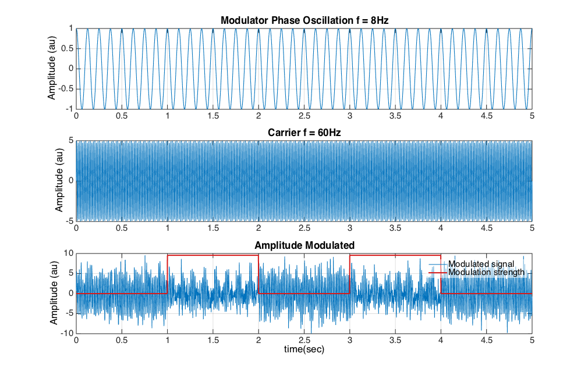
Compute PAC related measures using the method described in Canolty et al. 2006
[mvlmipacval, ~, ~, ~, ~, ~,~,~, mvlmipacstruct] = eeg_pac(data_pac', data_pac', s_rate,'freqs' ,phaserange... ,'freqs2' ,amprange... ,'alpha' ,alpha... ,'methodpac',method... ,'nfreqs1' ,nfreqsphase... ,'nfreqs2' ,nfreqsamp... ,'winsize' ,s_rate... ,'nboot' ,nsurrogate);
Visualizations
Plot comodulogram
eeg_visualize_pac(mvlmipacstruct, 'abs_pacval', 1, 'plotcomod', 1);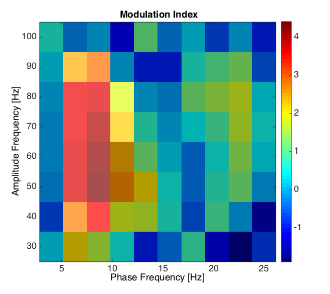
Plot distribution of surrogate PAC values and estimated PAC value
eeg_visualize_pac(mvlmipacstruct, 'phasefreq', fmodulating, 'ampfreq', fcarrier, 'abs_pacval', 1, 'plotsurrdist', 1);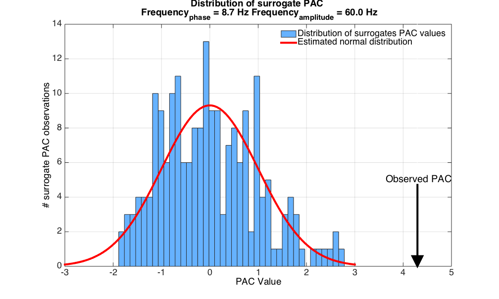
Plot distribution of composite phase-amplitude vectors and mean vector length. (See Canolty et al 2006)
eeg_visualize_pac(mvlmipacstruct, 'phasefreq', fmodulating, 'ampfreq', fcarrier, 'abs_pacval', 1, 'plotmvl', 1);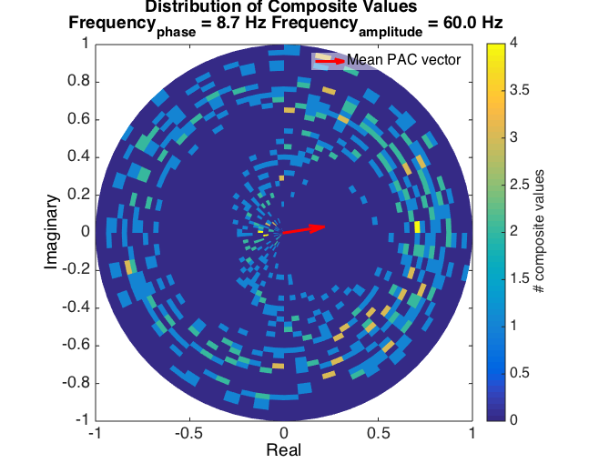
Parameters to generate multiple trial data
% Signal parameters fcarrier = 60; % Frequency of the carrier wave fmodulating = 8; % Frequency of the modulating wave. max_time = 2; % Time of the simulation. In seconds n_trials = 500; % Number of trials. s_rate = 200; % Sampling rate in Hz padtime = .25; % Padding time at the start and end of the signal. snrval = 5; % Signal to noise ratio. maxshift = 10; % Maximum shifts (jitter) injected into the data. nsegm = 5; % Number of segments in the data. Each segment is a block with or without modulation
Method parameters
method = 'glm'; % Method to be used to compute PAC (GLM from Penny et al. 2008) nfreqsphase = 10; % Number of frequencies used for the phase. nfreqsamp = 20; % Number of frequencies used for the amplitude. alpha = []; % Alpha value used for statistics (not corrected). If alpha = [] the statistics are not computed. phaserange = [4 25]; % Range of phases to be used amprange = [30 100]; % Range of amplitudes to be used
Generate multiple trial data
tlimits = [0 max_time]; shift = randi(maxshift, n_trials,1);% Vector to shift the trials in time for i=1:n_trials plot_flag = i == 1; % Plot the first trial [datatmp,t_outtmp] = generate_pac_signal(fcarrier,fmodulating,tlimits,'Ac',5,'Am',1,'fs',s_rate,'cpfunc','block','blockamp',1, 'nsegm',nsegm,'plot_flag', plot_flag,'padtime',padtime,'snr',snrval,'m',1); datatmp = [datatmp(shift(i):end) datatmp(1:shift(i)-1)]; % Shift the data in time datapactrials(i,:) = [datatmp(end-ceil(maxshift/2):end) datatmp(1:end-ceil(maxshift/2)-1)]; % Fill data matrix with shifted vector end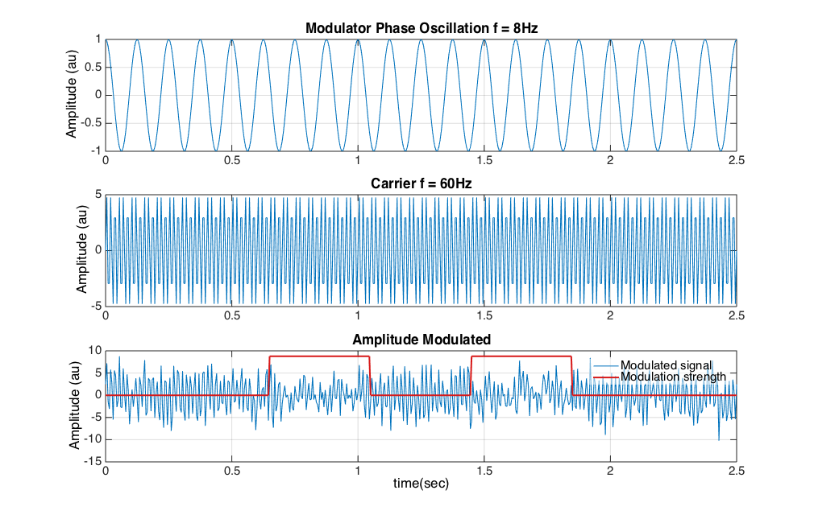
Compute PAC related measures using the method described in Penny et al. 2008
[glmpacval, ~, ~, ~, ~, ~,~,~, glmpacstruct] = eeg_pac(datapactrials', datapactrials', s_rate,'freqs' ,phaserange... ,'alpha' ,alpha... ,'methodpac',method... ,'nfreqs1' ,nfreqsphase... ,'nfreqs2' ,nfreqsamp... ,'freqs2' ,amprange... ,'winsize' ,s_rate... ,'nboot' ,nsurrogate);
Visualizations
Plot comodulogram
eeg_visualize_pac(glmpacstruct, 'plotcomod', 1);
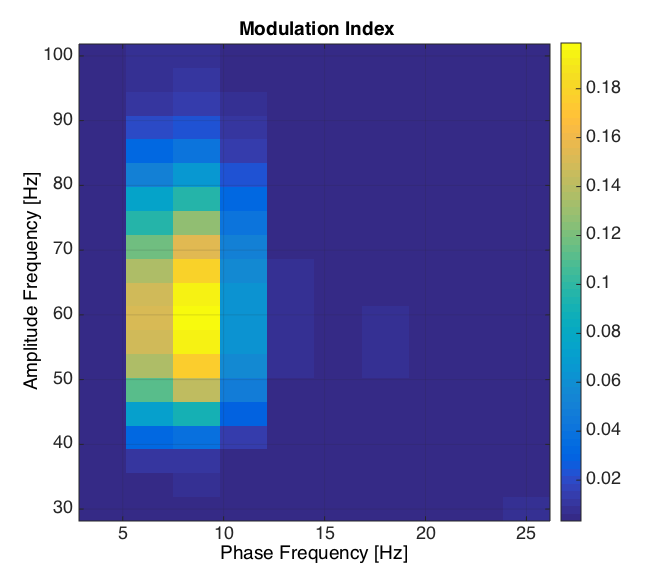 Plot temporal evolution of modulation
timevect = linspace(padtime, max_time+padtime, 15); eeg_visualize_pac(glmpacstruct, 'time', timevect, 'plotcomodt', 1);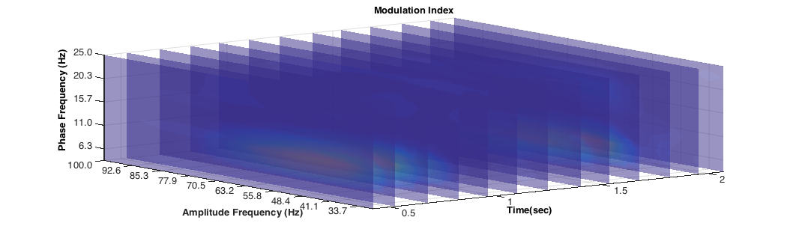
Plot temporal evolution of modulation index as a function of phase frequencies at the amplitude frequency of the carrier signal
eeg_visualize_pac(glmpacstruct, 'ampfreq', fcarrier, 'plotphaset', 1);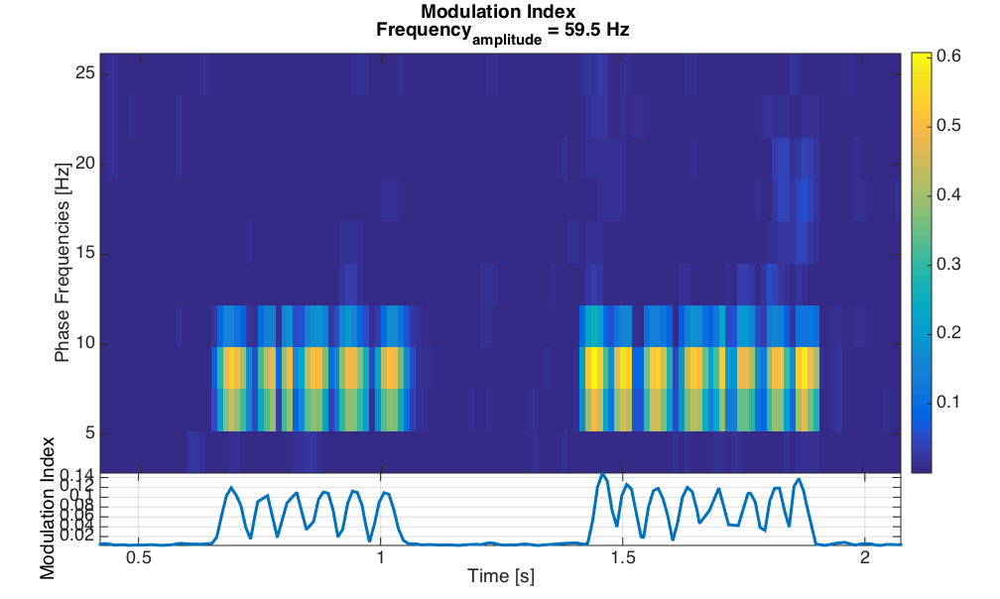
Plot temporal evolution of modulation index as a function of amplitude frequencies at the phase frequency of the modulating signal
eeg_visualize_pac(glmpacstruct,'phasefreq', fmodulating, 'plotampt', 1);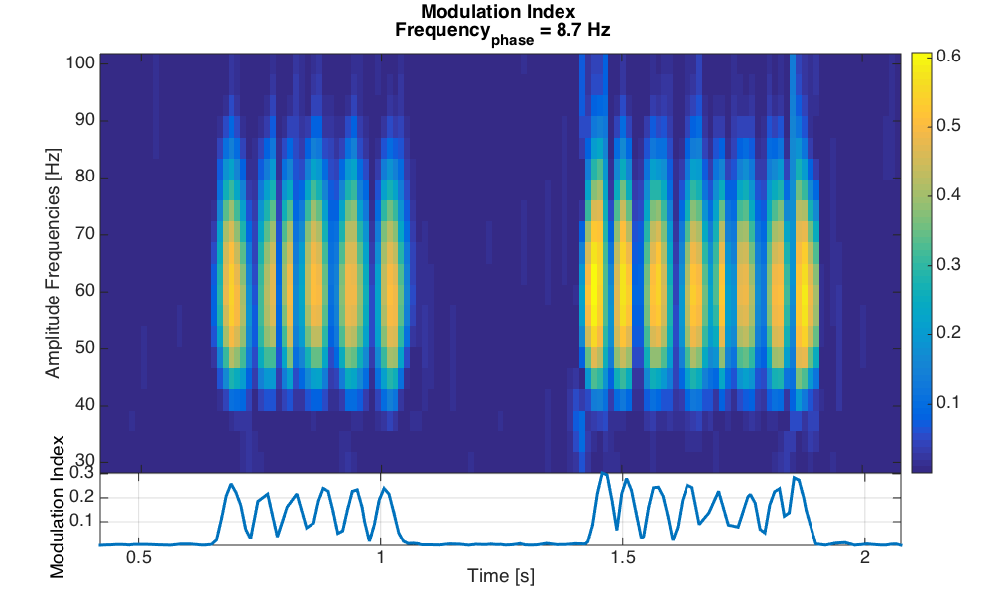
Real data application
Load data. Here you should replace the path to the data with your own one or call pop_pac(EEG) to compute PAC.
EEG = pop_loadset('filename','datademopac.set','filepath','/Volumes/projects/joseph/eeg_pac_plugin/scripts/demofiles/');
pop_loadset(): loading file /Volumes/projects/joseph/eeg_pac_plugin/scripts/demofiles/datademopac.set ... Reading float file '/Volumes/projects/joseph/eeg_pac_plugin/scripts/demofiles/datademopac.fdt'... Scaling components to RMS microvolt
PAC GUI
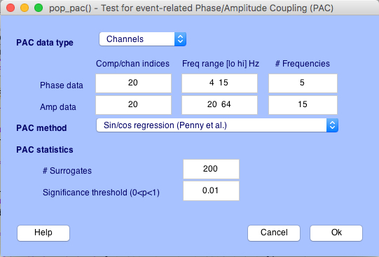
% Plot comodulogram eeg_visualize_pac(EEG.etc.eegpac{1}, 'plotcomod', 1); % Plot temporal evolution of modulation timevect = linspace(0,3,20); eeg_visualize_pac(EEG.etc.eegpac{1}, 'time', timevect, 'plotcomodt', 1); % Plot temporal evolution of modulation index as a function of the amplitude frequencies % at the given phase frequency eeg_visualize_pac(EEG.etc.eegpac{1}, 'phasefreq', 9, 'plotampt', 1); % Plot temporal evolution of modulation index as a function of phase frequencies % at the given amplitude frequency eeg_visualize_pac(EEG.etc.eegpac{1}, 'ampfreq', 55, 'plotphaset', 1);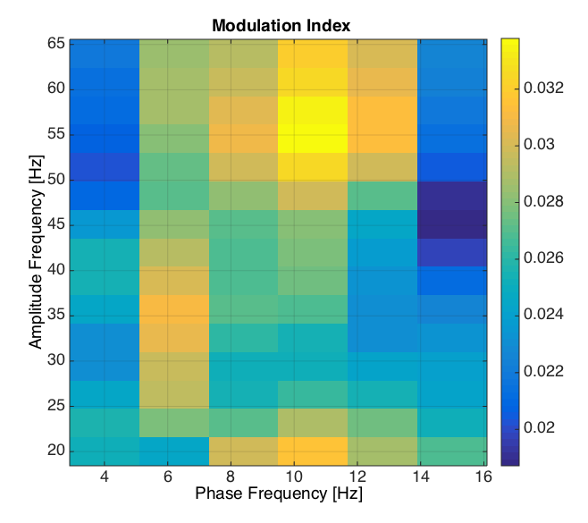 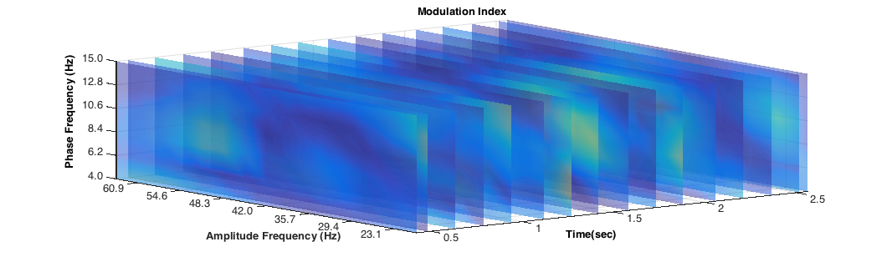 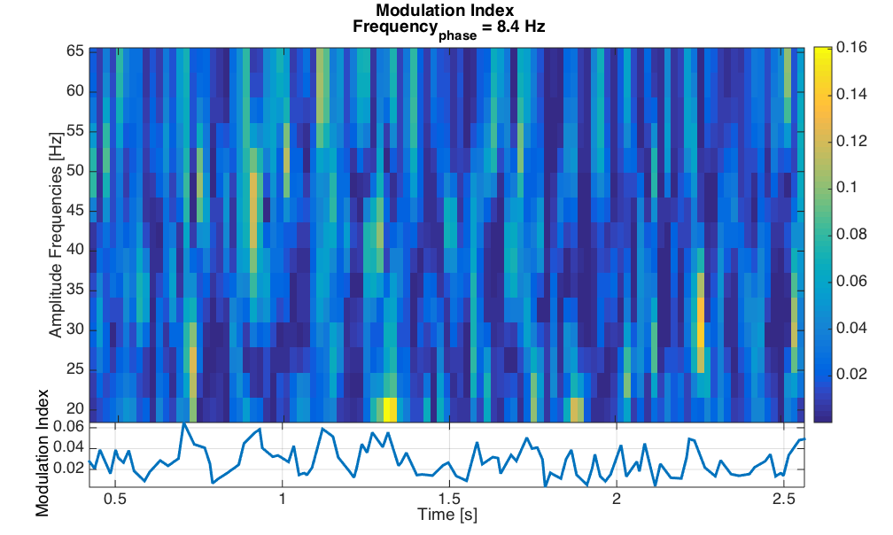 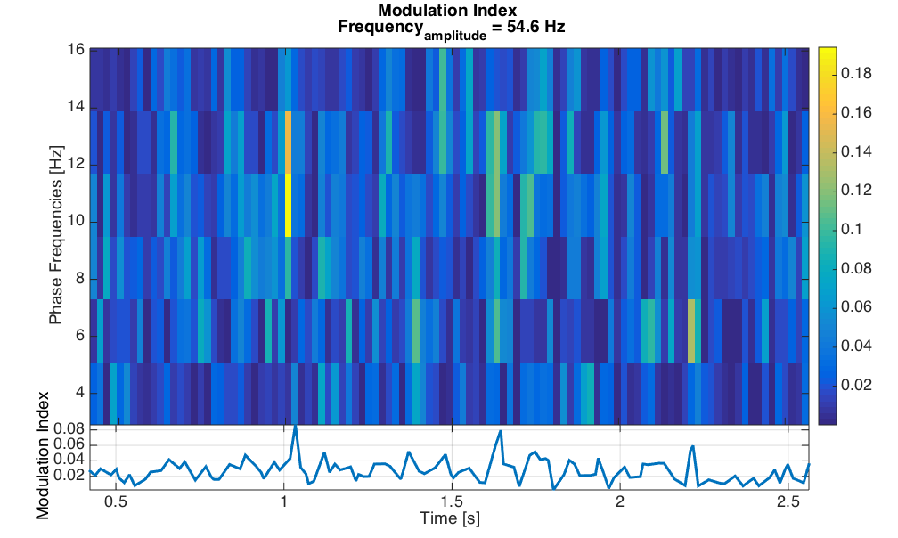